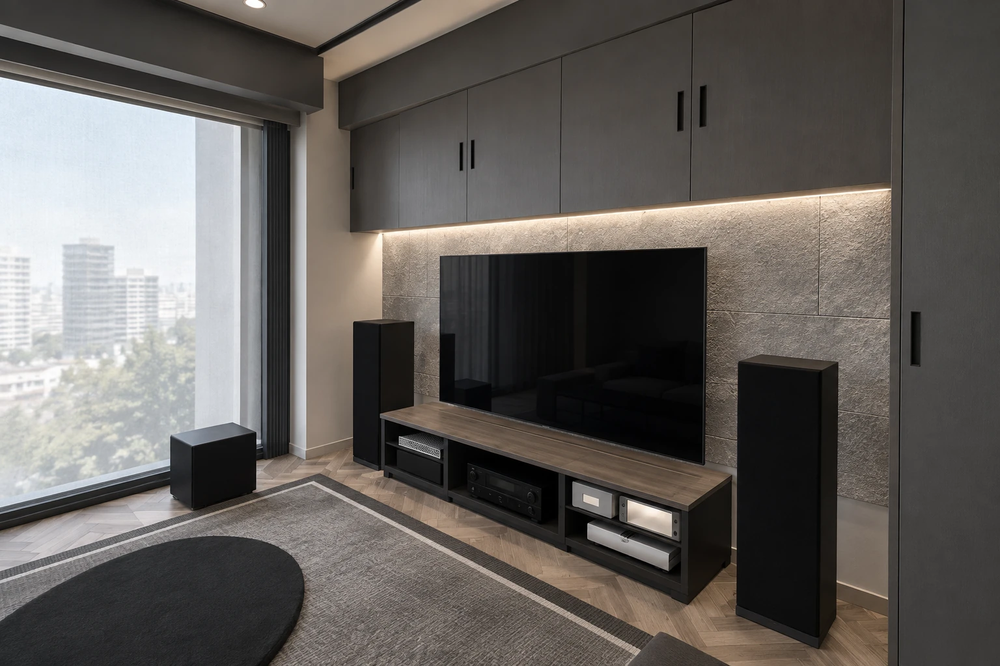
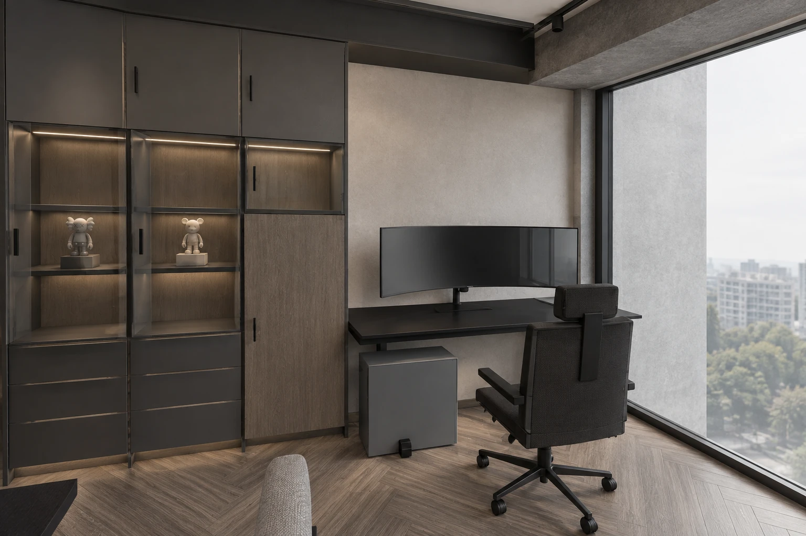
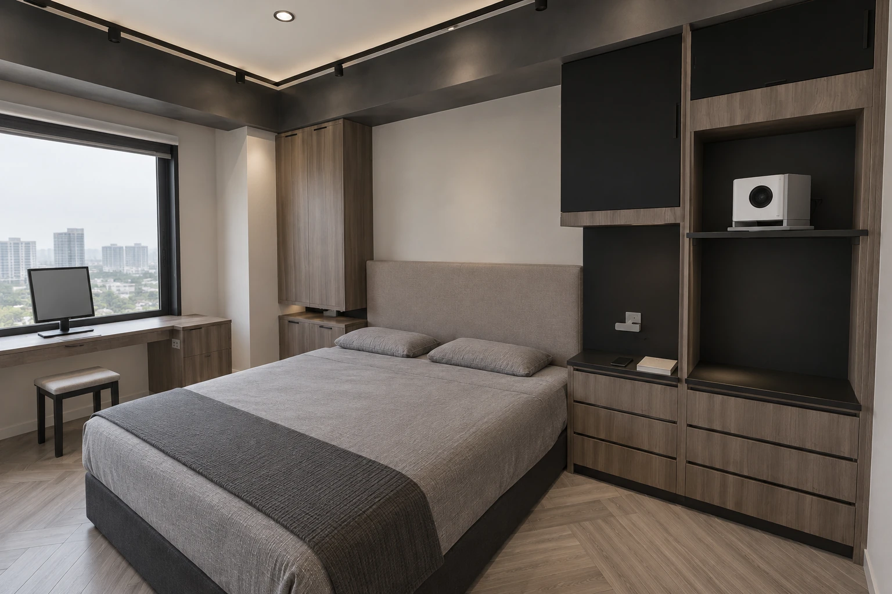

GR06 · MATERIAL & LIGHT · 2026.09.22
灰石、灰棕木與光。
以細肌理灰石建立客廳焦點，保留人字木地板的溫度。透過明暗、粗細與透明度，讓工作、影音、收藏與休息各有自己的表情。
本次確認灰石與灰色方向；保留灰棕色人字木地板，降低紅棕感。
設計提案集中石材主景、分區照明與以下細部配色，仍待實品及工程核定。

01 / PALETTE
每種材質各司其職
中灰細肌理石面公共區主景；橫向錯縫示意
灰棕木地板保留人字拼；減少紅橘色
淺灰霧面牆延伸視線；減少反光干擾
石墨色櫃框整合設備及門片輪廓
灰褐色織品沙發、床頭及臥室軟層次
色塊為螢幕示意。參考照片無法確認石種、品牌、實際板材大小或加工方式；選材時須以實品在日光與夜間燈光下比對。
02 / DESIGN CHOICE
石材集中，空間更有主次
| 材質方案 | 生活與空間感 | 收納及便利 | 施工及費用來源 |
|---|---|---|---|
| A · 主景灰石＋灰棕木 本輪工作推薦 | 影音區有焦點，書房與主臥保持平靜；較淺的背景牆減輕深櫃壓迫。 | 櫃體容量與原配置保留；粗糙石面集中，清潔較容易管理。 | 集中處理石材基層、收邊、洗牆與檢修；用料與轉角較少。 |
| B · 公共區連續石面 | 包覆感與雕塑感更強；多面石縫與肌理也會讓窄道顯得密集。 | 收納量相同；擦拭石面面積增加，局部替換較複雜。 | 增加石材面積、轉角裁切、損耗及隱藏檢修整合。 |
推薦 A：把材質預算集中在真正看得到、感受得到的焦點，同時保留書房使用舒適度與實用收納。本輪模型與 AI 圖依 A 展開；不代表細部材料已經核定。
03 / ROOM BY ROOM
同一套色系，不同空間的層次
| 空間 | 材質與光的安排 | 使用上的取捨 |
|---|---|---|
| 客廳 | 中灰細肌理石面、石墨櫃、灰棕木影音檯；石面上緣柔和洗牆。 | 保留通往書房的路徑；飾面厚度須納入完成面檢核。 |
| 中島 | 細面灰石檯面，保留木面與金屬差異；透明高櫃保持通透。 | 備餐檯面採易擦拭的細面。V1 高玻璃櫃及外弧兩席沿用。 |
| 廚房 | 已下單廚具以訂單為準；周邊灰牆銜接公共區，保持工作照明。 | 本輪不視為重新指定廚具顏色或變更訂單。 |
| 雙人書房 | 灰棕木、石墨框、較淺展示內襯；桌面功能光與展示光分開。 | 長時間使用優先；控制螢幕眩光。RGB 可作情境，日常不必開啟。 |
| 主臥／更衣室 | 灰褐織品、灰棕木、平靜灰牆；保留投影牆、層板與掛衣照明。 | 不增加粗石面或強烈光帶，減少睡眠區的視覺刺激。 |
| 收藏／儲藏 | 公共面清透展示，背側維持封閉收納；儲藏室以淺灰金屬層架為主。 | 展示與備藏分別計算。圖中公仔、包與箱子外觀為示意。 |
| 主浴／客浴 | 細面灰色濕區材料、灰棕浴櫃、黑色五金；保留原門窗及設備。 | 客浴無淋浴、無新增窗；保留手機平台與側向抽取紙盒。 |
| 玄關／後陽台 | 玄關灰磚與木地板清楚轉換；後陽台使用實用灰色耐清潔面。 | 入口取放、清潔及設備檢修優先，不額外塞入裝飾櫃。 |


04 / VERSIONS & LIMITS
五個格局，各自對應
V0、V1 以既有電視背板改灰石，保留上方與側面封閉櫃。V4 的固定電視牆使用灰石。V2、V3 保留旋轉電視的金屬結構，灰石只用於固定展示牆背板；玻璃與層板維持原配置。
本輪沿用 QA03 的牆、門窗、柱梁、櫃體和設備位置。每版 12 個空間、各 5 個角度；只有來源模型畫面完全相同的圖位才共用 AI 圖。圖集可切換 AI、模型及並排對照。
AI 圖用於比較材質、光線與視覺層次。門窗、格局及關鍵物件已對照來源模型；AI 的紋理、反射、公仔造型與窗外景色仍屬示意，不作精確尺寸、實際景觀或施工證明。模型尺寸亦須由核定圖說及現場複量確認。
待深化：石材基層與固定、完成面厚度、石縫排版、邊角與檢修收口、洗牆距離、燈具配光及迴路。新增線燈屬顧問提案，需由設計師與水電人員核對現場；未據此編列正式報價。